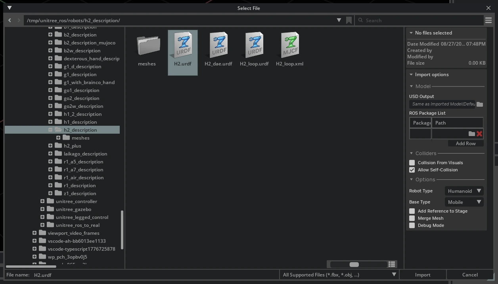
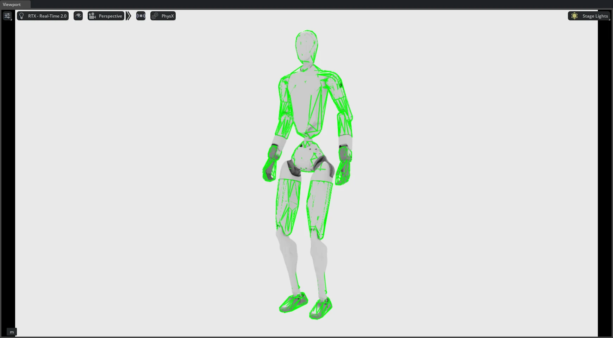
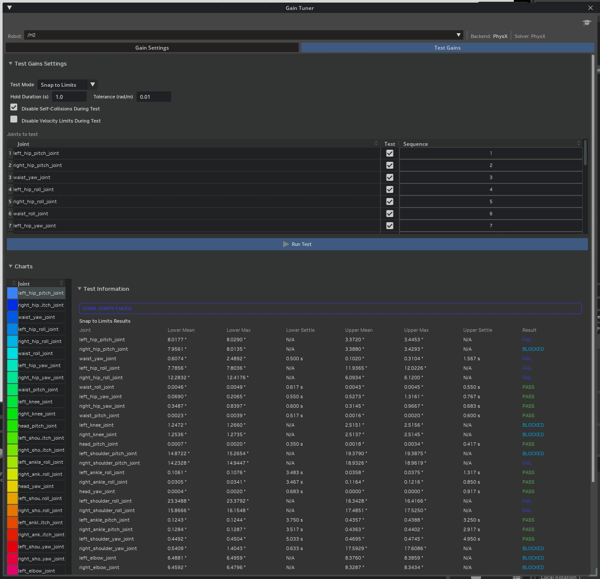

Stage 1：准备人形机器人 USD#
运动策略会学习训练资产所表示的动力学特性。因此，错误的质量、惯性、碰撞、关节或执行器属性都会成为策略学习行为的一部分。在 AGILE 中编码同一机器人之前，请先准备并验证 USD。更长的训练时间无法纠正这些错误；相反，策略会适应错误的模型。
本阶段不假设机器人制造商发布了哪些信息。如果 H2 已发布执行器数值，我们将将其作为示例展示，但即使你仅拥有资产本身，此处的每个流程也都适用。
选择你的起点#
在此阶段，有三种资产可以代表人形机器人，你拥有哪一种仅决定从哪里开始，而不改变需要验证的内容：
资产 |
何时使用 |
|---|---|
随附的参考 H2 |
|
你自己的人形机器人 URDF |
大多数读者在实际工作中将遵循的路径。请从从 URDF 导入自定义人形机器人开始。 |
机器人动物园 H2 |
参考 AGILE 任务所训练的资产，由 Stage 2 中的 |
以上三者均指向后续的检视、姿态、增益和验证章节，这些章节才是本阶段的重点。
Stage 2 实际训练的内容#
参考 H2 任务并不使用你在 Stage 1 中打开的 USD 进行训练。Stage 2 调用 fetch_h2_usd() 从 AGILE Robot Menagerie 中检索 H2，因此对随附的 Isaac Sim 资产所做的编辑不会影响参考运行。
使用 Stage 1 在一个可检视的资产上学习验证流程。对于你自己的人形机器人，请将 Stage 2 的机器人配置指向你在此处验证的 USD。该 USD 随后将成为训练资产，且所有 Stage 1 的检查项都直接适用于它。
请记住这两个 H2 资产之间的以下差异：
Menagerie 资产提供了
collision_profile和hands变体集。Stage 2 分别选择feet_only和none。随附资产仅提供Physics变体集。如果你的机器人使用变体，请在其 Stage 2 生成配置中定义其名称和选择。本阶段稍后的碰撞体审计将教你验证碰撞覆盖范围的方法。参考任务使用 Menagerie 资产所选定的碰撞体；你的自定义任务使用你自己 USD 中的碰撞几何体，因此在训练前请对其进行审计。
另请参阅
在 Isaac Sim 中模拟灵巧手 在一个较小的资产上演示了相同的检查、碰撞体和增益调整工作流程。
增益调整器 是调整工作流程以及本阶段未使用的正弦波和 dt 扫描测试模式的参考文档。
为运动策略绑定腿式机器人 介绍了人形机器人上下文之外的通用腿式机器人情况。请注意，其临时锚点附加在躯干上以进行姿态捕获；对于增益测试，请改为锚定关节根。
从参考 H2 资产开始#
从 Content Browser 中打开 Isaac/Robots/Unitree/H2/H2.usda。该资产由 URDF 导入器从 Unitree 的 h2_description 包生成，因此它已经具备此工作流程所期望的结构：
默认 prim 是
H2，关节根是/H2/Geometry/pelvis。一个
Physics变体集包含physics、physx、mujoco和none负载。在编辑任何内容之前，请在 Property 面板的 Variants 下检查选定的变体，并将物理编辑写入支持该变体的负载层，以便后续的几何更新不会丢弃这些编辑。该机器人采用浮动基座。它不包含任何固定于世界的关节，这正是运动训练所要求的。
它包含 31 个旋转关节：每条腿六个（
hip_pitch、hip_roll、hip_yaw、knee、ankle_roll、ankle_pitch），三个腰部关节，两个头部关节，以及每条手臂七个。
在训练之前，仍有若干属性需要您关注，由于资产可以正常打开并仿真而不报错，这些属性很容易被忽略：
属性 |
出厂资产中的状态 |
操作 |
|---|---|---|
驱动刚度与阻尼 |
所有 31 个关节均统一设置为 |
替换为按组设置的值。腿部与腕部共用单一刚度值只是占位符，而非经过调校的受控对象。全新导入的 URDF 会为两者分别生成 |
最大关节速度 |
驱动性能包络为 |
验证而非添加。使用 在 Isaac Sim 中部署策略 中的关节属性代码片段读取解析后的限制值，并确认其与您的硬件匹配，而不是假设 |
力矩限制 |
按关节编写，且大多与 Unitree 发布的数值一致。 |
对照 H2 执行器增益 进行抽查。腰部横滚和俯仰的值为 |
电枢惯量和关节摩擦 |
未定义；两者均解析为零。 |
Unitree 为每个驱动组发布 |
传感器与手部坐标系 |
缺失。该资产在构建时启用了固定关节合并，因此 |
参考观测项不读取 IMU prim，因此在 H2 路径上这不会造成任何影响。如果您的自定义观测项或部署接口通过名称引用这些坐标系，请禁用合并功能从 URDF 重新导入，而不是尝试从该资产中恢复它们。 |
注意
头部关节（head_pitch_joint 和 head_yaw_joint）在资产中带有驱动器，但未出现在 Unitree 发布的执行器组中。请明确决定策略是控制它们、保持它们静止，还是将其留给随机动作，并将该决定记录到 Stage 2 中。
从 URDF 导入自定义人形机器人#
按照 导入 URDF 中的说明操作，并将结果保存为 USD 资产。有三个导入器设置决定了该资产是否可用于运动训练。
将 Base Type 设置为 Mobile。默认值为 Source，该值会遵循源 URDF 的定义；由于 H2 仅在注释掉的代码块中声明其浮动基座，因此使用默认设置导入 H2 会在根 prim 和骨盆之间创建一个
/H2/Physics/root_joint固定关节，这会导致生成一个无法平移的关节结构。针对固定在世界中的根节点训练的运动策略，学习到的将是一个并不存在的模型。将设置改为 Mobile 会移除该关节，仅保留 URDF 自身声明的固定关节。如果您的机器人手臂能够触及躯干或腿部，请启用 Allow Self-Collision。如果不启用，训练过程中可能会发现肢体穿过身体的姿态。
将 Robot Type 设置为 Humanoid，以便导入器为该资产打上机器人模式标签，供机器人工具读取。
注意
固定关节合并是区分两个起始点的关键，通过 GUI 操作时您无需进行任何额外设置即可正确完成。导入对话框未公开该选项，且导入器默认不执行合并操作，因此通过 GUI 导入会保留 URDF 中声明的传感器和惯性系。对于 H2 而言，这意味着全新导入会将 imu_in_pelvis 和 imu_in_torso 保留为普通的 Xform 帧，并将 left_hand_link 和 right_hand_link 保留为刚体，而随附的资源是在启用合并的情况下构建的，其中不包含这些帧。参考 H2 观测项不读取 IMU prim，因此仅当您的自定义观测项或部署接口通过名称引用这些帧时，才需保留它们。如果您通过脚本执行导入，请在验证期间将 merge_fixed_joints 保持为其默认值 False。


选中 H2.urdf，启用 Allow Self-Collision，将 Robot Type 设置为 Humanoid，并将 Base Type 设置为 Mobile。#
导入器写入 USD Asset Structure 3.0：一个覆盖 payloads/base.usda 的薄根层用于几何体，以及一个覆盖物理负载的 Physics 变体集。将增益和限位写入物理负载，以便来自 CAD 或 URDF 源的几何体更新不会丢弃您的调优参数。
全新导入在结构上是完整的，但尚不可训练。使用上述设置导入 H2 会产生 31 个旋转关节、34 个刚体、23 个碰撞体，以及在 pelvis 上的单个关节根，这与 Stage 2 的预期相符。但它没有提供的是执行器模型：
全新导入后 |
您获得的内容 |
Stage 2 之前需要执行的操作 |
|---|---|---|
世界固定关节 |
|
确认没有残留的世界固定关节。URDF 中声明的手部固定关节是正常的。 |
驱动刚度与阻尼 |
在每个关节上设置 |
按组配置增益。如果关节未驱动，一旦按下 Play，关节结构就会坍塌。 |
最大力 |
取自 URDF 的 |
与制造商发布的规格进行核对。H2 的 URDF 与 Unitree 发布的组参数在手臂部分存在差异：肩俯仰（shoulder pitch）处为 |
电枢、关节摩擦与驱动速度 |
未配置 |
决定这些参数是放在 USD 中还是放在 Stage 2 执行器配置中，并仅在一个地方进行设置。 |
传感器与手部坐标系 |
在禁用固定关节合并时保留 |
如果 Stage 2 的观测数据或你的部署接口通过名称引用它们，则保留这些坐标系。 |
检查关节结构#
在调整驱动参数之前，先检查导入的或库中的资产。以下每一项都能发现一类在训练开始后难以诊断的故障。
通过 Eye > Show by Type > Physics > Colliders > All 启用碰撞体可视化，并确认每个接触表面都有几何体。刚体碰撞体显示为绿色，静态碰撞体显示为品红色。因此，如果你预期是动态的机器人上出现品红色，说明物理引擎尚未解析，你查看的是错误的内容。
通过 Eye > Show by Type > Physics > Joints 启用关节可视化，并确认每个轴指向预期方向。轴反向会导致训练出的策略以错误方向驱动关节，且该症状仅在部署时显现。
打开 Window > Robot Inspector，并确认每个运动连杆都具有合理的质量、质心和惯性。肢体上的零值或默认惯性是常见的 URDF 导出缺陷。当负载将 prim 分散到多个层时，Tree 层级模式比舞台视图更易于扫描。
确认资产在源数据中使用米、千克、秒、弧度和牛顿作为单位。
确认关节轴、位置限制、速度限制和力矩限制与机器人匹配。
确认在根连杆上存在且仅存在一个 articulation root。在 H2 上，该位置为
/H2/Geometry/pelvis。在进行运动训练时，不要使用固定关节将人形机器人连接到世界。确认关节和连杆名称稳定且唯一。你在 AGILE 机器人和任务配置中引用这些名称，后续重命名会使已训练的策略失效。


导入的 H2 上的碰撞体可视化。凸包覆盖躯干、大腿和脚部，而小腿仅由膝盖处的细杆表示。#
不要将“具有碰撞体”理解为“具有正确的碰撞体”。导入的 H2 在 34 个刚体链接中的 23 个上设置了碰撞，而随附资源在 32 个中的 21 个上设置了碰撞；导入资源中多出的两个链接是 left_hand_link 和 right_hand_link，合并操作会移除它们。这听起来很完整，直到你查看这些形状是什么。大多数链接携带其视觉网格的凸包，但 URDF 还为每条腿附带了两个粗糙的原始几何体替身：
链接 |
碰撞体 |
需要检查的内容 |
|---|---|---|
|
凸包网格 |
这是脚部，也是对于运动而言最重要的接触表面。脚踝 roll 链接没有碰撞体，因此不要在那里寻找脚部。 |
|
圆柱体，长 |
直径 5 cm 的杆是小腿的占位符，而不是其表示形式。如果你的任务奖励或终止条件依赖于小腿接触，请替换它。 |
|
球体，半径 |
位于髋部的 10 cm 球体。对于自碰撞剔除足够，但对于任何与大腿接触的情况较差。 |
在两个资源中，有 11 个链接完全没有碰撞体：.*_hip_pitch_link、.*_ankle_roll_link、
.*_wrist_pitch_link、.*_wrist_roll_link、waist_yaw_link、waist_roll_link 和
head_pitch_link。它们都不在链的末端，因此机器人没有未覆盖的末端，但间隙的大小并不相同：髋部 pitch、脚踝 roll 和头部 pitch 是两个已覆盖链接之间的单个未覆盖链接，而腰部和每个手腕都有两个连续的未覆盖链接。以同样的方式检查你自己的机器人链，并确认间隙出现的位置，而不是假设数量足够。
注意
如果通过脚本而非视口对资产进行审计，请遍历实例代理。两个 H2 资产均将其几何体存储为 USD 实例，因此普通的 Usd.Stage.Traverse() 会跳过原型，报告 4 个碰撞体而不是 23 个。请使用 Usd.PrimRange.Stage(stage, Usd.TraverseInstanceProxies()) 并确认数量与碰撞体可视化所绘制的一致，然后再断定几何体缺失。
警告
不要直接变换资产的根 prim。两个 H2 资产在该 prim 上都带有 Physics 变体集，在其上编写可能会清除变体选择，从而在机器人于视口中看起来仍然正确的情况下，静默地从舞台上移除所有关节和运动链根节点。请将资产置于您自己的 Xform 下，并移动该 Xform。如果物理效果消失，请首先检查 Property 面板中 Variants 下的变体选择。


验证驱动器#
一旦某组关节的跟踪效果可接受，请使用其余测试模式来发现制作错误，而不是寻找更好的增益。弧度与度数之间相差 57.3 倍的单位转换错误、缺失的最大力限制或反转的关节体，都会在此处表现为几乎所有关节同时失败。
出于同样的原因，在这些测试中保留锚点和从 在测试任何内容之前固定机器人 中移除的地面平面。
在所有驱动关节上运行 Snap to Limits。该测试命令每个关节运动至其下限，保持一段时间，然后命令其运动至上限，从而验证增益、限位和碰撞几何体是否一致。

每个关节的 Snap to Limits 结果，包括稳定时间以及每个限位处的平均误差和最大误差。#
最后运行 Stress。该测试使用极端的随机命令驱动关节，并暴露出激进强化学习探索可能产生的求解器不稳定性。
删除临时固定关节，并恢复之前移除的地面平面（如果有）。

准确解读每个关节的判定结果：
结果 |
含义 |
|---|---|
|
在容差范围内到达了上下两个限位。 |
|
未到达限位且关节仍在运动。这表明增益或动力学存在问题。 |
|
未到达限位且关节停滞，通常是由于自碰撞或其他物理约束所致。 |
注意
在 H2 上预期会出现混合结果，并正确解读。使用 Unitree 发布的增益运行 Snap to Limits 时，31 个关节中有 13 个通过；其余关节报告 BLOCKED 或 FAIL。这并非建模错误，原因与上述 Step Function 误差较大相同。
为了区分接触阻挡与扭矩不足的问题，请在勾选 Disable Self-Collisions During Test 的情况下重新运行测试。在 H2 上，两次运行的结果仅在一个关节上存在差异，这表明限制因素是扭矩而非接触。Disable Velocity Limits During Test 以相同的方式隔离速度上限。真正需要引起注意的是某个关节失败而其镜像关节通过，或者机器人的一侧整体失败。
提示
如果关节在接近其极限时变得不稳定，而不是简单地无法达到极限，请在 Stage 面板中选择 PhysicsScene，并在更改任何增益之前将 Time Steps Per Second 提高到 120。
验证物理模型#
上述章节分别介绍了静态属性和驱动器。在配置训练任务之前，请确认整个机器人的动态行为：
恢复地面平面，将机器人放置在其上方，按下 Play，并确认机器人能够下落并稳定，而不会发生爆炸、穿透地面或产生持续的接触抖动。
在 Tools > Robotics > Joint Inspector 中，让每个关节在保守范围内运动，并确认其方向、限位和报告状态是否正确。
确认机器人是浮动基座，且没有残留的世界固定关节，并且根链接上恰好存在一个关节树根。
在运行时读取位置、速度和力矩限制，而不是信任编辑时设置的属性。在 H2 上，驱动性能包络报告的速度为无限大，而关节解析出的限制为有限值，因此编辑时设置的值与实际生效的值不一致。
确认驱动的刚度和阻尼是您为每个组单独设置的值，而不是在所有关节上重复使用的统一值。

在 Isaac Sim 中，H2 关节体已加载并在地面上保持站立姿态。#
记录阶段 2 的输入#
USD 文件只是训练模型的一部分。请在这些值在 Isaac Sim 中含义清晰时记录以下数值。在阶段 2 中，您将在 AGILE 机器人配置中编码这些值；在阶段 3 中，您将在 MDP 项中引用相同的名称和坐标系。以下给出的 H2 值仅作为示例；请全程替换为您自己机器人的名称。
记录项 |
H2 参考值 |
|---|---|
USD 路径和关节体根 Prim |
|
根链接、脚部链接和跌倒终止链接 |
根 |
有序关节名称及受控子集 |
31 个旋转关节；参考任务控制其中 14 个（12 个腿部关节加上 |
默认站立根姿态、关节位置和关节速度 |
基座位于 |
位置、速度和力矩限制 |
这三项均在运行时解析；请记录解析后的值，而非编写的属性值 |
执行器刚度、阻尼、电枢惯性、摩擦、饱和值以及预期控制延迟 |
在 编写执行器增益 中发布的组；每组 |
用于生成策略观测值的 IMU 和其他传感器坐标系 |
如果你从 URDF 导入时禁用了固定关节合并，则包含 |
不要从其他机器人的 H2 示例中推断这些值。名称决定了 MDP 项解析哪些模拟刚体和关节，而物理值决定了策略所体验的动力学。
按层级进行故障排除#
症状 |
可能的层级 |
检查项 |
|---|---|---|
机器人爆炸或出现持续抖动。 |
缩放、惯量或碰撞几何体。 |
检查单位、过小或无效的惯量、初始穿透、自碰撞以及求解器设置。 |
机器人穿过地面或悬浮在地面上方。 |
碰撞几何体。 |
确认脚部和地面已启用碰撞体，并且碰撞组兼容。 |
关节朝错误方向运动或超出预期范围。 |
关节定义。 |
检查关节刚体、轴、局部坐标系、限位和单位转换。 |
机器人无法自由下落。 |
铰接结构。 |
移除固定到世界的关节，并确认一个铰接根节点代表浮动基座。 |
后续的 AGILE 项无法找到连杆或关节。 |
命名约定。 |
记录解析后的铰接名称，而不是显示标签或在导入过程中发生变化的 URDF 名称。 |
机器人外观正确，但没有关节或铰接根节点。 |
变体选择。 |
确认资产根 prim 上仍选中 |
碰撞体显示为品红色而不是绿色。 |
物理解析。 |
品红色表示静态。连杆未解析为刚体，因此在信任任何碰撞体或质量读数之前，请检查变体选择和负载。 |
脚本报告的碰撞体数量远少于碰撞体可视化所绘制的数量。 |
遍历。 |
使用 |
仿真启动时，机器人会弹跳至其姿态。 |
关节状态。 |
仅设置驱动目标不足以作为初始状态。还需编写 |
几乎所有关节同时无法执行“Snap to Limits”（吸附至限位）。 |
增益编写。 |
检查弧度到角度的转换，并确认每个驱动都设置了 Max Force（最大力）。 |
完成检查清单#
USD 包含一个经过验证的浮动基座关节体。
质量、惯性、碰撞、关节轴和关节限位值在物理上是可信的。
任务所依赖的接触表面具有代表它们的碰撞几何体，而不是占位图元。
机器人下落并稳定，没有不稳定的接触。
每个关节都按预期方向运动并遵守其限位。
关节和连杆名称稳定且唯一。
站立姿态已作为关节状态编写，而不仅仅是驱动目标。
驱动刚度、阻尼和最大力是按关节组编写的，而不是统一设置的。
用于增益测试的临时固定关节已删除。
Stage 2 输入列表记录了资产、姿态、执行器、关节、连杆和传感器值。